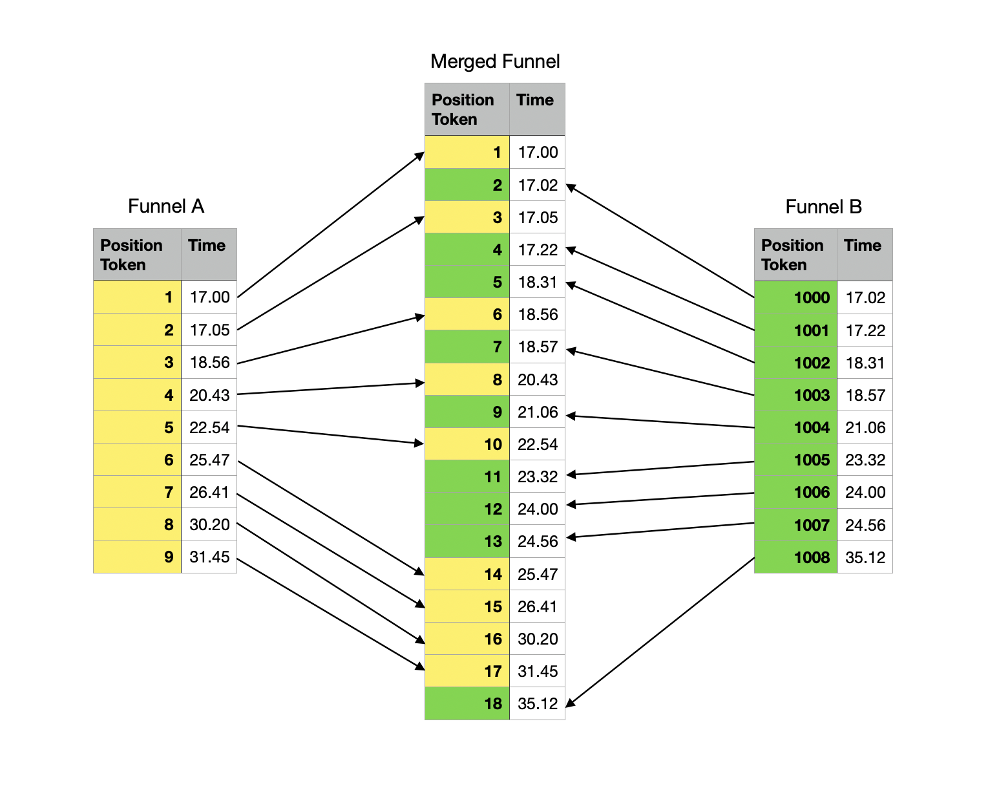

Why a Real Double Funnel?
Limit of Single Funnel
A single funnel has capacity problems when the number of finishers per minute exceeds the maximum number of tokens the token distributors can hand out. This starts to become a problem when there are over 750 finishers, becoming more serious when over 1000.
Limitation of Conventional Double Funnel
The only advantage of a traditional double funnel is that it brings the finish line closer to tokens. But a 100 metre funnel is the same length as two 50 metre ones, and the number of people per minute who can leave the funnel is the same as for a single.
There's also a significant volunteer overhead managing the left/right swap and stopping and starting the queues.
Purpose of the Real Double Funnel
The Real Double Funnel doubles the number of tokens per minute that can be given out and therefore reduces queueing. We have written the software to handle two funnels but the principle will work with any number of funnels.
History of the Real Double Funnel
The first implementation of a real double funnel was on 28th January 2017. This was at Voortrekker Monument parkrun, using software that they wrote to merge the data. You can see details of that run here
John Jaap and Robin Davey realised that in order to cope with larger number of runners at our own Christmas Day parkrun where the option of extending the length of the finish funnel was not really possible, we needed another approach, John had heard of the event at Voortrekker Monument and so we got to work writing code and planning how we could implement it once again.
The second implementation was the initial trial using John and Robin's code some 8 years later at Preston Park parkrun on 14th June 2025, details of that one here. This was essentially a chance for us to test the code and the funnel management with a view to using it on our future Christmas day events where we can expect a much larger turnout than usual.
We trialled it again and then succesfully implemented it on Christmas day 2025 when it dealt with 1,475 runners with ease.
Since then we've decided to use this on a weekly basis as we regularly get too many for our single funnel to cope with. We've found that things run much more smoothly with a double funnel.
It has now also been used by other parkruns, with great success.
How we do it
Imagine two parkruns running in parallel but with two differing sets of tokens it's really as simple as that.
Each of the funnels is processed independently so that any changes can be made to either funnel if required in a similar way to EMS, the data from each funnel is then merged, sorting the data by finish time and assigning a new position for each athlete.

A new timer file is created from the two original files as well as a new scanner file containing new token numbers and athlete information.
Event Operation
- Two completely separate funnels, each have their own timer(s) and token distributor(s).
- Funnel A has tokens 1 to 499 (or 1 to 999 depending on the size of the event).
- Funnel B has tokens 500 to 999 (or 1000 to 1999).
- Optionally a funnel manager holding an arrow sign in each hand directs finishers left or right, roughly equal numbers to each side. If one fills up, they send more to the quieter side.
- It’s preferable that the first 20 to 30 finishers all go to Funnel A to give a firm base to start from and to make it easier to distinguish between funnels A & B timer files.
- When finish becomes busy, finishers split to either side. It doesn’t matter which, providing that once they have crossed the line they remain on that side.
- Funnel managers need to not only check for funnel duckers out of the funnel, but also any ducking between funnels.
- Timekeeper or Number Checker in Funnel A should monitor the token numbers to ensure the funnel is closed and finishers directed to Funnel B, before they run out of tokens.
- When finishers quieten down, close either funnel and send the last finishers through the other. This isn't vital, but when the gaps between finishers are large it's easier to control results if they aren't split between A and B.
- Finishers use any barcode scanner, there is no need to have a separate group of scanners for each funnel.
- Use the parkrohn application to prepare the data ready for processing in EMS.
Disadvantages of a Real Double Funnel and parkrohn
- May need more volunteers, especially time keepers and finish token handlers, although this may be offset by less funnel managers if the funnel is much shorter.
- Due to the increased speed in which athletes can be processed through the funnels, bar code scanners are likely to see an increase in numbers of athletes waiting to be scanned at any one time, this is especially noticable during the peak finish times.
- Events will need more tokens than are required for a single funnel to ensure that there is no possiblitily of running out. It is recommeneded that the event uses tokens 1-500 in funnel A and 501-1000 in funnel B. Although this is obviously dependant on numbers expected.
- Additional processing of results, first in parkrohn, and then in EMS.
- Small changes to published results may require rstroring the session from parkrohn and publishing a whole new set of data.
- Also see limitations and known issues in the user guide.